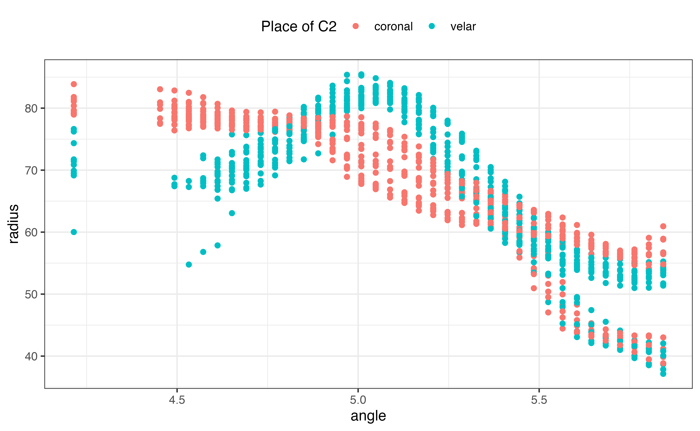

Transform spline coordinates between cartesian and polar
Stefano Coretta
2025-02-20
Source:vignettes/transform-coord.Rmd
transform-coord.RmdIt is possible to transform the coordinates of your spline data from
cartesian to polar and vice versa, with transform_coord().
Let’s attach the package rticulate and load the data set
tongue.
library(rticulate)
data(tongue)
tongue
#> # A tibble: 3,612 × 28
#> speaker seconds rec_date prompt label TT_displacement TT_velocity
#> <fct> <dbl> <fct> <fct> <fct> <dbl> <dbl>
#> 1 it01 1.31 29/11/2016 15:10:57 Dico p… max_… 67.1 36.6
#> 2 it01 1.20 29/11/2016 15:11:03 Dico p… max_… 77.9 -7.73
#> 3 it01 1.08 29/11/2016 15:11:25 Dico p… max_… 65.9 21.1
#> 4 it01 1.12 29/11/2016 15:11:35 Dico p… max_… 64.4 8.76
#> 5 it01 1.42 29/11/2016 15:11:57 Dico p… max_… 76.9 -4.72
#> 6 it01 1.35 29/11/2016 15:12:53 Dico p… max_… 78.1 -5.68
#> 7 it01 1.07 29/11/2016 15:13:44 Dico p… max_… 69.9 -40.0
#> 8 it01 1.17 29/11/2016 15:13:49 Dico p… max_… 78.0 -7.31
#> 9 it01 1.28 29/11/2016 15:14:11 Dico p… max_… 67.1 34.5
#> 10 it01 1.10 29/11/2016 15:14:22 Dico p… max_… 75.9 -23.5
#> # ℹ 3,602 more rows
#> # ℹ 21 more variables: TT_abs_velocity <dbl>, TD_displacement <dbl>,
#> # TD_velocity <dbl>, TD_abs_velocity <dbl>, TR_displacement <dbl>,
#> # TR_velocity <dbl>, TR_abs_velocity <dbl>, fan_line <int>, X <dbl>, Y <dbl>,
#> # word <fct>, item <dbl>, ipa <fct>, c1 <fct>, c1_phonation <fct>,
#> # vowel <fct>, anteropost <fct>, height <fct>, c2 <fct>, c2_phonation <fct>,
#> # c2_place <fct>Now let’s convert the cartesian coordinates to polar.
transform_coord() converts to polar coordinates by default.
Your data set must contain columns named X and
Y with, respectively, the x and y
coordinates (if the columns are named differently, you will have to
rename them). The function extracts xy data from two fan
lines (the defaults are 10, and 25), and it
uses these data to find the origin. By default, a column named
fan_line is used for the fan lines number, but it can be
supplied by the user with the argument fan_line_col as a
string.
If you have imported data using read_aaa(), the defaults
will work, so you can just use
transform_coord(your-data).
polar <- tongue %>%
filter(speaker == "it01") %>%
transform_coord()
#> The origin is x = 14.3901267816422, y = -65.2315420525846.The function returns a data set with two new columns:
radius and theta. It also prints the
calculated origin.
If you get an error relating to lm.fit, try to change
the fan_lines to values different from the default.
We can now plot the contours using polar coordinates in a cartesian system. Notice that the tip of the tongue is on the left (rather than the right, as in the original data).
polar %>%
ggplot(aes(angle, radius, colour = c2_place)) +
geom_point() +
scale_colour_discrete(name = "Place of C2") +
theme(legend.position = "top")
#> Warning: Removed 264 rows containing missing values or values outside the scale range
#> (`geom_point()`).
Plotting in polar coordinates gives a sense of the actual shape of the tongue, but it is a bit trickier and it does not look very nice… (the tip is again on the left).
polar %>%
ggplot(aes(angle, radius, colour = c2_place)) +
geom_point(alpha = 0.5) +
scale_colour_discrete(name = "Place of C2") +
coord_polar(start = pi) +
xlim(min(polar$angle) - pi / 2, max(polar$angle) + pi / 2) +
ylim(0, max(polar$radius)) +
theme_void() +
theme(legend.position = "top")
#> Warning: Removed 264 rows containing missing values or values outside the scale range
#> (`geom_point()`).